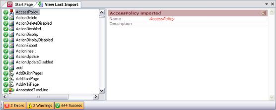

A report that informs you on the outcome of the Import process after the implicit verifications have been performed.  The Log's buttons footer displays the total number of new objects, warnings objects and objects with errors that were detected during consolidation. The left pane displays the list of consolidated objects, including their names and descriptions. See Also
|
| Backlinks |
| Toc:GeneXus - Table of contents |